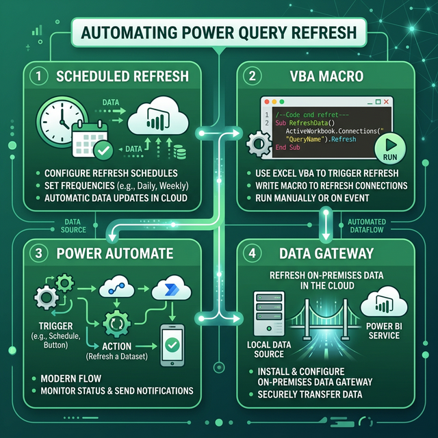

Tự động hóa và tối ưu Power Query
Scheduled Refresh, VBA Macro, Power Automate, Data Gateway và Best Practices toàn diện.
13.1 Scheduled Refresh trong Power BI Service
Khi publish báo cáo lên Power BI Service, bạn có thể lên lịch refresh tự động:

Publish báo cáo
Power BI Desktop → Home → Publish → chọn Workspace
Cấu hình Scheduled Refresh
Power BI Service → Dataset → Settings → Scheduled Refresh
Thiết lập lịch
Chọn tần suất: hàng ngày, hàng tuần. Thiết lập múi giờ và lên đến 8 lần/ngày (Pro) hoặc 48 lần/ngày (Premium).
| License | Tần suất tối đa | Incremental Refresh |
|---|---|---|
| Pro | 8 lần/ngày | ❌ |
| Premium Per User | 48 lần/ngày | ✅ |
| Premium Capacity | 48 lần/ngày | ✅ + XMLA endpoint |
13.2 Refresh bằng VBA Macro trong Excel
Trong Excel, có thể dùng VBA để refresh Power Query khi mở file hoặc theo lịch:
' Refresh tất cả connections khi mở file
Private Sub Workbook_Open()
ThisWorkbook.RefreshAll
End Sub
' Refresh query cụ thể
Sub RefreshSpecificQuery()
ActiveWorkbook.Connections("Query - SalesData").Refresh
End Sub
' Refresh và đợi hoàn thành
Sub RefreshAndWait()
Dim conn As WorkbookConnection
For Each conn In ThisWorkbook.Connections
conn.OLEDBConnection.BackgroundQuery = False
conn.Refresh
Next conn
MsgBox "Đã refresh xong tất cả queries!"
End Sub
' Tự động refresh mỗi 30 phút
Sub AutoRefreshTimer()
ThisWorkbook.RefreshAll
Application.OnTime Now + TimeValue("00:30:00"), "AutoRefreshTimer"
End Sub13.3 Power Automate + Power Query
Power Automate (Microsoft Flow) cho phép tự động hóa refresh based on events:
Ví dụ workflow phổ biến
| Trigger | Action | Ứng dụng |
|---|---|---|
| File mới trong SharePoint | Refresh dataset Power BI | Tự động cập nhật khi có dữ liệu mới |
| Email nhận được | Extract attachment → lưu SharePoint → Refresh | Báo cáo tự động từ email |
| Lịch (hàng ngày 6h sáng) | Refresh + gửi email kết quả | Dashboard cập nhật trước giờ làm |
| Nút bấm (Manual trigger) | Refresh dataset | Refresh theo yêu cầu |
Tạo Flow trong Power Automate
https://flow.microsoft.com → Create → Automated cloud flow
Chọn Trigger
Ví dụ: "When a file is created in a folder" (SharePoint)
Thêm Action
Power BI connector → Refresh a dataset → chọn Workspace + Dataset
13.4 Data Gateway (Cổng kết nối)
Khi dữ liệu nằm trên server nội bộ (on-premises), cần On-premises Data Gateway để Power BI Service truy cập:
Standard Gateway
Cho tổ chức: nhiều user dùng chung, quản lý tập trung, hỗ trợ Live Connection.
Personal Gateway
Cho cá nhân: chỉ 1 user, import mode only, không chia sẻ, chạy trên máy cá nhân.
Cài đặt và cấu hình
- Tải On-premises Data Gateway từ Microsoft
- Cài đặt trên server → đăng nhập tài khoản Microsoft 365
- Power BI Service → Settings → Manage Gateways → Add data source
- Chỉ định loại nguồn (SQL Server, File, etc.) + credentials
- Trong dataset setting → Gateway connection → chọn gateway đã cấu hình
13.5 Best Practices tổng hợp
Tổng hợp các best practices từ sách "Master Your Data with Power Query":
📋 Naming Convention
| Loại | Prefix | Ví dụ |
|---|---|---|
| Raw query | raw_ | raw_SalesCSV |
| Staging query | stg_ | stg_Sales |
| End table | Tên rõ ràng | Sales, DimProduct |
| Parameter | p | pFilePath, pYear |
| Custom function | fn | fnCleanText |
⚡ Performance Checklist
- ✅ Giữ Query Folding càng lâu càng tốt
- ✅ Disable Load cho staging queries
- ✅ Remove unnecessary columns sớm
- ✅ Filter rows trước khi transform nặng
- ✅ Dùng Table.Buffer cho self-join
- ✅ Set Privacy Levels phù hợp (tránh Formula.Firewall)
- ✅ Tránh Column from Examples cho production (khó maintain)
- ✅ Dùng Parameters cho đường dẫn và thông tin kết nối
📝 Documentation
- Đặt mô tả (Description) cho mỗi query: Right-click → Properties → Description
- Comment trong Advanced Editor: // Comment dòng hoặc /* Block comment */
- Đặt tên bước (Step) có ý nghĩa thay vì giữ tên tự động
13.6 10 Tips tối ưu Power Query
Từ sách "Power Pivot & Power Query For Dummies" — 10 mẹo giúp query chạy nhanh hơn:
| # | Tip | Chi tiết |
|---|---|---|
| 1 | Giới hạn cột | Chỉ giữ cột cần thiết bằng Table.SelectColumns — giảm RAM |
| 2 | Giới hạn dòng sớm | Filter dòng ở bước đầu tiên (trước transform) → Query Folding tối ưu |
| 3 | Tắt Background Refresh | Query Properties → bỏ tick "Enable background refresh" cho query nặng |
| 4 | Dùng Native Query | Khi kết nối SQL: viết trực tiếp SQL query thay vì để PQ generate |
| 5 | Disable auto-detect types | File → Options → Data → bỏ "Automatically detect column types" — tự set types |
| 6 | Dùng Table.Buffer | Buffer dữ liệu nhỏ được dùng nhiều lần (lookup tables) |
| 7 | Staging queries = Connection Only | Không load staging vào sheet → giảm dung lượng workbook |
| 8 | Tránh Custom Column phức tạp | Thay custom column bằng Conditional Column hoặc hàm có sẵn khi có thể |
| 9 | Dùng Views trên DB | Tạo SQL View (đã filter/join) → PQ import view thay vì raw tables |
| 10 | Đặt tên steps rõ ràng | Rename Applied Steps → dễ debug, dễ bảo trì khi query phức tạp |
13.7 Collaboration & Sharing Queries
Power Query hỗ trợ chia sẻ và cộng tác trên queries giữa nhiều người/hệ thống:
Shared Queries trong Excel
| Phương pháp | Cách dùng | Ưu/Nhược |
|---|---|---|
| Copy M Code | Copy code từ Advanced Editor → paste vào Blank Query | Đơn giản, nhưng không auto-sync |
| Template File (.xltx) | Lưu workbook chứa queries làm template | Chuẩn hóa cấu trúc team |
| Shared Folder Source | Đặt file nguồn trên SharePoint/OneDrive | Team dùng chung query + data |
Dataflows trong Power BI Service
Khi dùng Power BI, Dataflows cho phép tạo queries dùng chung trên cloud:
- Power BI Service → Workspace → New → Dataflow
- Thiết kế queries (giống PQ Editor)
- Publish → Tất cả reports trong workspace dùng chung Dataflow
Excel ↔ Power BI: Chia sẻ Queries
// Từ Excel → Power BI:
// Copy M code từ Advanced Editor → Paste vào PBI Desktop Blank Query
// Từ Power BI → Excel:
// Power BI Desktop → Transform Data → chọn query → Copy M code
// Excel → Data → Get Data → From Other Sources → Blank Query → Paste
// Hoặc dùng Power BI Dataflow → Excel kết nối:
// Excel → Data → Get Data → From Power BI → chọn Dataflow13.8 Workflow: Raw Data → Dashboard
Quy trình end-to-end xây dựng dashboard tự động cập nhật:
Pipeline 6 bước
| Bước | Công cụ | Hành động |
|---|---|---|
| 1. Thu thập | Power Query | Import từ files/DB/Web → Raw queries |
| 2. Chuẩn hóa | Power Query | Clean, transform, merge → Staging queries |
| 3. Tải | Power Query | Load → Table hoặc Data Model |
| 4. Phân tích | PivotTable | Tạo PivotTable + Calculated Fields/Items |
| 5. Trực quan | PivotChart + Slicer | Charts + Slicers + Timeline trên Dashboard sheet |
| 6. Tự động | VBA / Refresh | Auto-refresh khi mở, timer, hoặc nút Refresh |
Thiết kế Dashboard Sheet
✅ Tạo sheet riêng "Dashboard" — ẩn các sheet data
✅ View → bỏ Gridlines, bỏ Headings
✅ Đặt background: màu trắng hoặc gradient nhẹ
✅ Thêm Title (Merge cells + font lớn)
✅ Bố trí: Slicers bên trái, Charts ở giữa + phải
✅ Format Charts: xóa Chart Title trùng, thêm Data Labels
✅ Kết nối tất cả Charts với cùng Slicers
✅ Protect Sheet (cho phép filter, không cho edit)
✅ Thêm nút "🔄 Refresh" (Macro: ThisWorkbook.RefreshAll)
✅ File → Save as .xlsm (macro-enabled)Bài tập 13.1: VBA Auto-Refresh Excel
Mục tiêu: Tạo macro tự động refresh khi mở file
- Tạo workbook có 1 Power Query kết nối file CSV
- Mở VBA Editor (Alt+F11)
- Trong ThisWorkbook, thêm:
Private Sub Workbook_Open() ThisWorkbook.RefreshAll End Sub - Lưu file dạng .xlsm (Macro-Enabled)
- Đóng và mở lại → xác nhận dữ liệu được refresh tự động
Bài tập 13.2: Thiết lập ETL 3-Layer
Mục tiêu: Tổ chức queries theo pattern Raw → Staging → End Table
- Tải 2 file CSV: NhanVien.csv và PhongBan.csv
- Tạo Raw queries:
- raw_NhanVien → Disable Load
- raw_PhongBan → Disable Load
- Reference tạo Staging:
- stg_NhanVien: Rename columns, Set types → Disable Load
- stg_PhongBan: Rename, Clean text → Disable Load
- Reference tạo End Tables:
- NhanVienChiTiet: Merge NV + PB → Enable Load
- ThongKePhongBan: Group By → Enable Load
- Tổ chức vào Groups: "01_Raw", "02_Staging", "03_Output"
- View → Query Dependencies → screenshot biểu đồ
- Close & Load
Bài tập 13.3: Naming Convention & Documentation
Mục tiêu: Áp dụng best practices cho project thực tế
- Lấy bài tập 13.2 và bổ sung:
- Thêm Description cho mỗi query (Properties)
- Đổi tên mỗi Step thành tên có ý nghĩa (ví dụ: "Changed Type" → "SetColumnTypes")
- Thêm Parameters:
- pDataFolder = đường dẫn đến thư mục chứa CSV
- Thay hardcoded path bằng pDataFolder trong raw queries
- Advanced Editor → thêm comments giải thích logic
- Close & Load